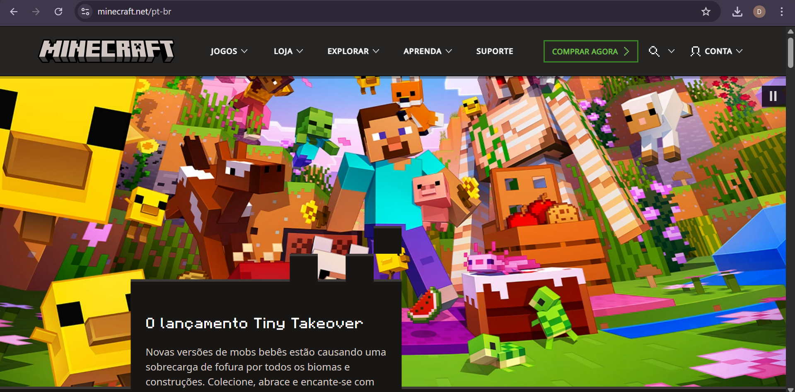
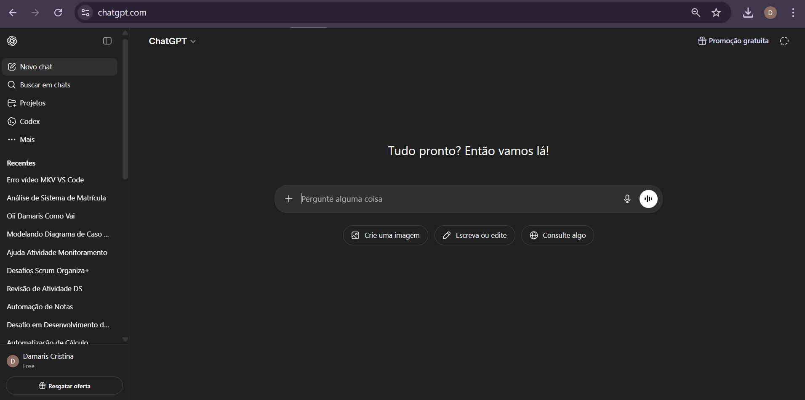
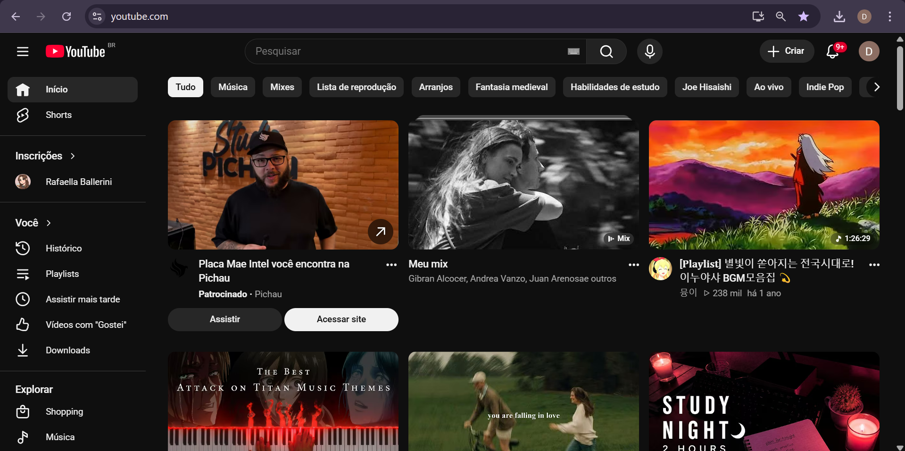
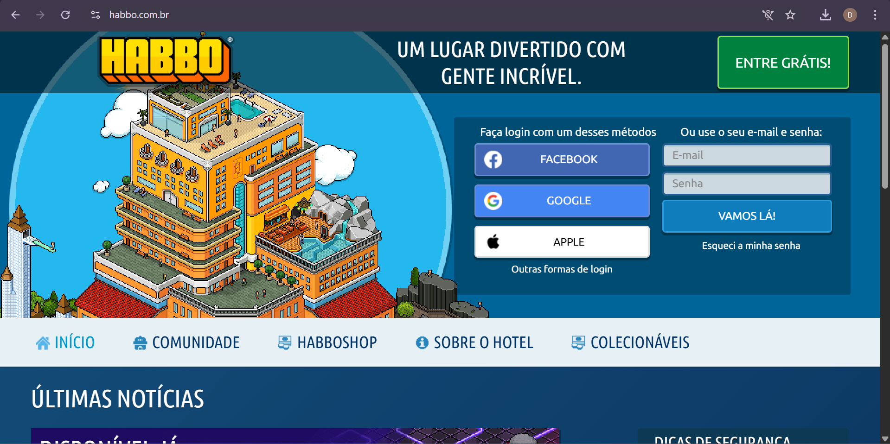

Meus Sites Favoritos: Damaris
Primeiro Site: Minecraft
Coloco este site em primeiro, pois sempre tive vontade de comprar o jogo original, e então depois de conquistá-lo, amo jogar.

Link para o site do Minecraft
Segundo Site: Chat GPT
Coloco este site em segundo, pois é uma ferramenta muito útil para obter informações e resolver dúvidas, me ajuda muito em meus estudos.

Link para o site do ChatGPT
Terceiro Site: YouTube
Coloco este site em terceiro, pois é uma plataforma muito legal para assistir a vídeos e aprender coisas novas, muito boa para estudo também.

Link para o site do YouTube
Quarto Site: FRIV
Coloco este site em quarto, pois é uma plataforma de jogos muito divertida, tem uma grande variedade de jogos para todos os gostos, relembra minha infância.

Link para o site do FRIV
Quinto Site: Habbo
Coloco este site em quinto, pois é uma plataforma de jogos online muito popular antigamente, onde posso interagir com amigos e criar meu próprio espaço.

Link para o site do Habbo